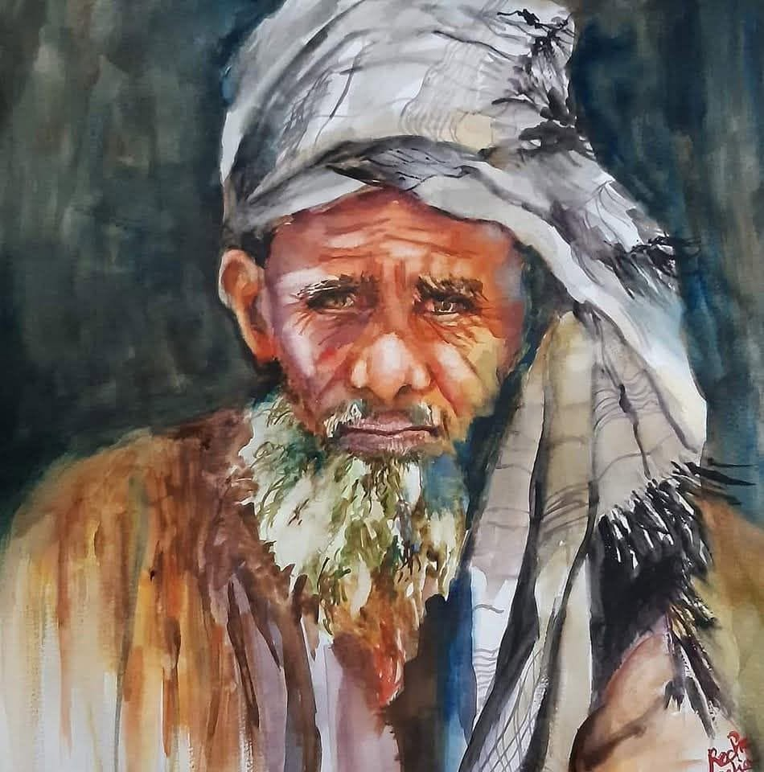

Dans les rides du temps, le poids du silence, souffle des âges
Il y a,
dans son regard,
quelque chose
qui traverse le temps.
Une histoire
qu’aucune voix ne raconte,
mais que le silence
connaît par cœur.
Sous son turban
froissé,
le vent s’est arrêté
de courir.
Il s’est endormi
et a laissé ses traces.
Ses rides —
des sillons de poussière
et d’espoir —
se croisent sur son visage,
Comme des routes anciennes,
des sentiers —
où la poussière du monde
s’est posée doucement
Et où le temps s’est égaré.
Ses yeux,
deux lampes éteintes,
fatiguées —
gardent
et portent
encore la braise
du jour
et du monde,
celle des chemins arides,
des rires perdus
dans la lumière du soir.
Son regard,
vieux phare,
éclaire encore
les ombres.
On y lit la fatigue
des jours,
la foi,
mais aussi la tendresse
du monde
Et de ceux qui ont trop vu
pour encore juger.
Sa barbe,
comme un champ d’hiver,
mêle le blanc de la neige
et la terre
au sable
Et à la poussière,
comme si les saisons
qu’on ne compte plus
s’y étaient réfugiées
et chaque poil murmure
une prière oubliée.
Tout respire la paix,
celle qu’on trouve
après avoir tout donné.
Il ne parle pas,
ne dit rien —
mais son silence
parle fort.
Tout en lui raconte :
l’attente,
la fatigue,
la beauté simple
d’avoir vécu,
les rires d’autrefois,
les mains usées
par la vie,
la dignité tranquille
de ceux
qui n’attendent plus rien,
sauf peut-être la lumière.
Et moi,
devant lui,
je me tais —
parce qu’il y a
des visages
qu’on écoute
comme des poèmes.
Ô vieil homme
du désert,
ton regard
traverse le temps,
il me dit
sans mots :
« Tout passe…
mais rien ne s’efface. »
Djamel Metref
At Yenni le 4 novembre 2025
Portrait © Reche Safia

← Tous les poèmes